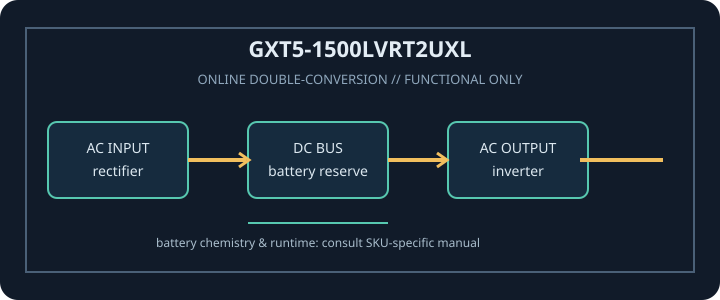

[ ONLINE DOUBLE-CONVERSION UPS // IDENTIFIED MODEL ]
Liebert GXT5-1500LVRT2UXL
Vertiv GXT5-1500LVRT2UXL: 1500 VA / 1350 W online double-conversion UPS. This record covers only the identified SKU and regional configuration; match complete model code and nameplate to manufacturer documentation.

ARCHIVAL IDENTIFICATION: Record full SKU, region, serial/date code, firmware/revision, installed options, battery identifier and observed condition. Similar product names do not prove electrical compatibility.
Model specifications
| Exact model / topology | Vertiv GXT5-1500LVRT2UXL; Online double-conversion, pure sine-wave output; rack/tower convertible. |
|---|---|
| Rated output | 1500 VA / 1350 W. VA and W limits are separate constraints; never exceed either. |
| Input / output voltage | Input: 120 V nominal, North American low-voltage model. Output: 120 V nominal; consult guide before changing configured output. |
| Input connection | NEMA 5-15P input plug for this low-voltage model. |
| Output receptacles | 6 × NEMA 5-15R output receptacles. |
| Battery chemistry / service | Internal hot-swappable, user-replaceable VRLA battery assembly (not the separately identified lithium-ion variant). Use only matching approved battery hardware. |
| Runtime | Refer to Vertiv’s GXT5 120 V runtime tables at the cited manufacturer documentation. Runtime depends on load watts, battery age/condition, charge, ambient temperature and supported external battery cabinets. |
| Transfer behavior | Zero transfer time during normal online double-conversion operation; internal automatic bypass supports specified fault/overload conditions. Consult manual for transfer limits and alarms. |
| Communications / compatibility | USB and serial communications, EPO, and IntelliSlot for compatible optional network management. Software/OS and card compatibility is version-specific. |
| Compatibility / safety | 120 V, 1500 VA / 1350 W model with 5-15P input and 5-15R output. Confirm the branch circuit, nameplate and load requirements. Do not substitute GXT5 lithium/208 V variant documentation. Read the exact revision of the manufacturer manual before connection, service or battery replacement. |
Service and compatibility notes
- Measure and record connected watts and source voltage; runtime is not guaranteed for an aged or untested battery.
- Do not open energized mains equipment. Never defeat protective earth, overload an outlet, use damaged equipment, or substitute an unapproved battery.
- For hardwired or high-current versions, qualified installation, rated branch protection and local electrical code apply.
- Confirm the complete model suffix, input wiring, output voltage, outlet map and manual revision against the unit nameplate before connecting equipment.
Manufacturer datasheet and manual sources
- Vertiv Liebert GXT5-1500LVRT2UXL manufacturer product pageOfficial model ratings, features and manufacturer downloads.
- Vertiv Liebert GXT5 500–3000 VA VRLA user guide (120 V models)Official 120 V series manual covering installation, safety, communications and batteries.